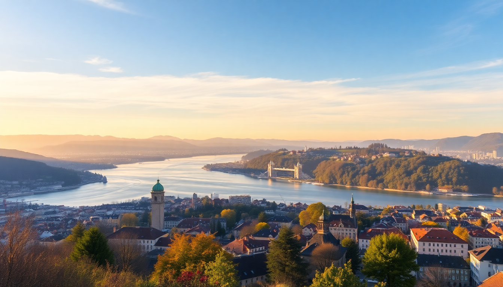

Best Cities to Visit in Switzerland: Zurich, Geneva, Lucerne & Bern

I spent three weeks hopping between these four Swiss cities last fall, and the differences surprised me more than the Alps. Zurich felt like a banker’s playground, Geneva had a quiet international hum, Lucerne was pure postcard, and Bern felt like a secret. Here’s what I actually did, where I ate, and what I’d skip.
Why visit Zurich over the other Swiss cities?
Zurich is the biggest city, but that doesn’t mean it’s the best. I’d go for the food scene and the lake access. The Niederdorf quarter in the old town is where I spent most evenings — it’s loud, narrow, and full of bars spilling onto cobblestones. Avoid Bahnhofstrasse for shopping unless you want luxury brands you can find anywhere.
- Lake Zurich promenade: A flat 4km walk from Bürkliplatz to the Chinese Garden. I did it at sunset and it was genuinely relaxing, no crowds.
- Kronenhalle restaurant: Overpriced but the walls are covered in original Chagalls and Picassos. I went for a drink, not dinner.
- Hotel Storchen: Right on the river. I didn’t stay there (too expensive) but I had coffee on their terrace and the view of the Grossmünster is unbeatable.
- Zeughauskeller: A massive beer hall serving Zürcher Geschnetzeltes. It’s touristy but the food is solid and portions are huge.
The Zurich Card covers trams, boats, and museum entry. I bought the 24-hour version and broke even just on the Kunsthaus and a ferry to Rapperswil.
Is Geneva worth visiting for more than the UN?
Geneva feels like a city that’s always working. The UN and Red Cross headquarters pull in diplomats, but the old town is small and walkable. I liked it for the mix of cultures — you hear French, Arabic, English on the same street. The lake is massive here, and the Jet d’Eau is exactly what you see in photos.
- Carouge neighborhood: Feels like a small Italian town inside Geneva. I had a cheap pizza at Pizzeria da Paolo and wandered the Saturday market.
- Bains des Pâquis: A public bath on the lake. I swam in October (cold but fine) and ate a fondue at the café after. Cheap entry, very local.
- Hotel N’vY: A design hotel near the lake. I paid 180 CHF for a double in shoulder season — reasonable for Geneva.
- CERN: Free guided tours but you need to book weeks ahead. I missed the slot and regretted it.
Skip the old town’s tourist restaurants on Rue du Rhône. Instead, head to Les Halles de l’Île for a casual lunch — it’s a covered market with good sandwiches and wine by the glass.
How many days do you need in Lucerne?
Two days is enough. One for the old town and the lake, one for the mountain. Lucerne is compact and the charm wears thin after 48 hours because it’s the most tourist-saturated of the four. That said, the Chapel Bridge and the Lion Monument are genuinely impressive, even with crowds.
- Mount Pilatus: I took the cable car from Fräkmüntegg and hiked the last section. The view over the lake is better than from Rigi, in my opinion.
- Hotel des Balances: Old-town hotel right on the Reuss River. Rooms are small but the location is perfect. Book directly for a better rate.
- Wirtshaus Galliker: Family-run spot serving Luzerner Chügelipastete. No English menu, cash only, and it was the best meal I had in Lucerne.
- Lucerne Lake cruise: The SGV boats run hourly. I took the 2-hour round trip to Weggis and back. Worth it just to see the villas and vineyards on the shore.
The Swiss Travel Pass covers the boat and the mountain railways. I didn’t buy it because I was moving between cities, but if Lucerne is your base, it pays off fast.
What makes Bern different from the other three?
Bern is the capital nobody talks about. It’s small, slow, and the old town is a UNESCO site that actually feels lived in. The Aare River wraps around the city and locals swim in it all summer. I preferred Bern to Zurich because it had less pretense and more real daily life.
- Zytglogge: The medieval clock tower. I joined the free walking tour that starts at the Tourist Office at 11:30. The guide explained the moving figures and the history of timekeeping.
- Einsteinhaus: A tiny museum in the apartment where Einstein lived. It’s only two rooms but the entry fee is 6 CHF and you see his original desk.
- Restaurant Della Casa: Classic Bernese cuisine — Rösti with Emmental cheese and a fried egg. I went twice. It’s quiet and full of locals reading newspapers.
- Hotel Schweizerhof Bern: I splurged here for one night. The spa has a rooftop pool with views of the Bundeshaus. Worth it if you can find a deal.
Skip the Bear Pit (BärenPark). The enclosure is depressing and the bears looked bored. Instead, walk the Nydeggbrücke bridge at sunset for the best view of the old town.
Which Swiss city has the best public transport connections?
Zurich. The Hauptbahnhof is the central hub for all major train lines. I took the IC1 to Bern in 56 minutes flat, then the IR to Geneva in 2 hours 40 minutes. Lucerne is a 45-minute direct train from Zurich as well.
- Zurich HB: Direct trains to Munich, Milan, Paris, and all Swiss cities. The underground shopping arcade has a Coop supermarket and a decent bakery.
- Geneva Cornavin: Connects to the French TGV network. I took a morning train to Lyon and was there in under two hours.
- Bern Hauptbahnhof: Smaller but cleaner. The S-Bahn lines run every 15 minutes to the suburbs.
- Lucerne Bahnhof: Dead-end station, meaning you have to backtrack to Zurich for most onward connections. Plan for that.
I used the SBB Mobile app for all tickets. The half-fare card costs 120 CHF and halves every ticket. If you’re doing more than two long-distance trips, buy it.
FAQ
What is the best time of year to visit these Swiss cities? Late May through early October. I went in mid-September and had sunny days, empty trails, and lower hotel rates. Winter is pretty but the cities get dark by 4:30 PM and the fog in Zurich can be relentless. Christmas markets run from late November to December 24th — Bern’s is the most charming, with mulled wine and raclette stalls on the Münsterplatz.
Is Switzerland expensive for food and accommodation? Yes, but you can manage. I paid 12 CHF for a beer in Zurich and 8 CHF in Bern. For accommodation, budget hotels in Geneva start around 150 CHF, while Lucerne is closer to 200 CHF. Eat at Coop or Migros supermarkets for lunch — their ready-made sandwiches and salads are fresh and cost 8-12 CHF. I saved by booking hotels with kitchenettes and cooking breakfast myself.
Do I need a car to visit Zurich, Geneva, Lucerne, and Bern? No. The Swiss rail system is faster and cheaper than driving. Parking in all four cities is expensive (30-50 CHF per day) and traffic in Zurich is brutal. I bought a Swiss Travel Pass for three days of unlimited trains, boats, and buses, then used single tickets for the rest. The pass also covered museum entry in Lucerne and Bern.
Conclusion
- Zurich wins for food and nightlife, but skip the shopping street. Stay near Niederdorf.
- Geneva is worth a day for the lake and Carouge. Book CERN tours early.
- Lucerne is a two-day stop. Do the Pilatus cable car and eat at Wirtshaus Galliker.
- Bern is the underdog. Walk the old town, swim the Aare, and skip the Bear Pit.
- Use trains, not cars. The SBB app and half-fare card save real money.